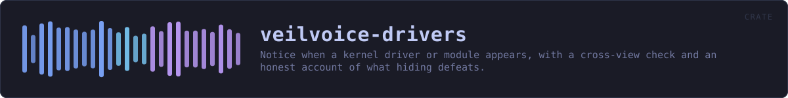

veilvoice-drivers
Notice when a kernel driver or module appears, with a cross-view check and an honest account of what hiding defeats.
reference · the same page on GitHub
What is loaded into the kernel, recorded, and compared later. A driver appearing between two looks is worth knowing about: it is the step almost everything that wants to watch a microphone from underneath has to take.
The limit, stated first
This reads a list the operating system hands out. Anything able to lie to that list is not in it. A kernel module that has unlinked itself from the module list, or a driver that hooks the enumeration this calls, will be invisible here — and would be invisible to any unprivileged program asking the same question, which is why the answer is "detect carelessness", not "detect rootkits". See SCOPE.
The cross-view check, and what it is actually worth
On Linux the kernel publishes the same fact twice: /proc/modules and the directories under /sys/module. Report::discrepancies lists modules that appear in one and not the other, which catches something that unlinked itself from one list and forgot the other. That has been a real mistake in real rootkits.
It is a check for carelessness and nothing more. Both views come from the same kernel, so anything with the privilege to edit one has the privilege to edit both. A quiet cross-view check is not evidence that nothing is hiding, and this crate never says it is.
No other platform here has two independent views to compare, so Report::discrepancies is empty on them — which is reported as "there was nothing to cross-check", not as "the check passed".
A new driver is not by itself a finding
Plugging in a printer loads a driver. So does a graphics update, a VPN client, a virtual audio cable — VeilVoice recommends one — and a game's anti-cheat. Change::Appeared is a fact about a list, and the question it raises is "did you install something?", which the person at the keyboard answers in a second. Nothing here tries to answer it for them.
Where the answer comes from
| Platform | Source | Needs privilege | |---|---|---| | Linux | /proc/modules, cross-checked against /sys/module | no | | Windows | driverquery.exe /FO CSV /NH | no | | macOS | kmutil showloaded, falling back to kextstat | no | | others | nothing is read, and support says so | — |
Linux reads two files and spawns nothing. The other two shell out to a tool the system already ships, for the same reason the rest of this workspace does: #![forbid(unsafe_code)] holds here too, and the native APIs are FFI.
HOW THE CRATE FITS TOGETHER
Every arrow is a crate:: or super:: path one module actually uses, read out of the source rather than drawn by hand.
The same graph as Mermaid source
%%{init: {"theme":"base","themeVariables":{"background":"#1a1b26","primaryColor":"#1f2335","primaryTextColor":"#c0caf5","primaryBorderColor":"#7aa2f7","secondaryColor":"#16161e","tertiaryColor":"#16161e","lineColor":"#737aa2","textColor":"#c0caf5","mainBkg":"#1f2335","nodeBorder":"#7aa2f7","clusterBkg":"#16161e","clusterBorder":"#2f3549","fontFamily":"ui-monospace, SFMono-Regular, Consolas, monospace","fontSize":"14px"}}}%%
flowchart TD
n_lib(["lib.rs<br/>736 lines"])
n_linux["linux.rs<br/>230 lines"]
n_macos["macos.rs<br/>206 lines"]
n_windows["windows.rs<br/>232 lines"]
click n_lib href "https://github.com/tilas01/veilvoice/blob/main/crates/veilvoice-drivers/src/lib.rs" "open the source"
click n_linux href "https://github.com/tilas01/veilvoice/blob/main/crates/veilvoice-drivers/src/linux.rs" "open the source"
click n_macos href "https://github.com/tilas01/veilvoice/blob/main/crates/veilvoice-drivers/src/macos.rs" "open the source"
click n_windows href "https://github.com/tilas01/veilvoice/blob/main/crates/veilvoice-drivers/src/windows.rs" "open the source"This site loads no third-party script, so it cannot run Mermaid; the diagram above is the same nodes and edges drawn by the generator instead. GitHub renders the source below directly.
THE FILES
| File | Lines | What it is |
|---|---|---|
lib.rs | 736 | What is loaded into the kernel, recorded, and compared later. |
linux.rs | 230 | Linux: /proc/modules, cross-checked against /sys/module. |
macos.rs | 206 | macOS: kmutil showloaded, falling back to kextstat. |
windows.rs | 232 | Windows: driverquery.exe, which the system already ships. |